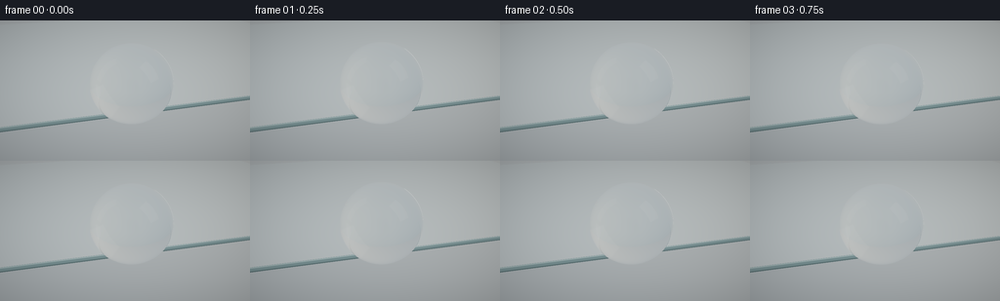
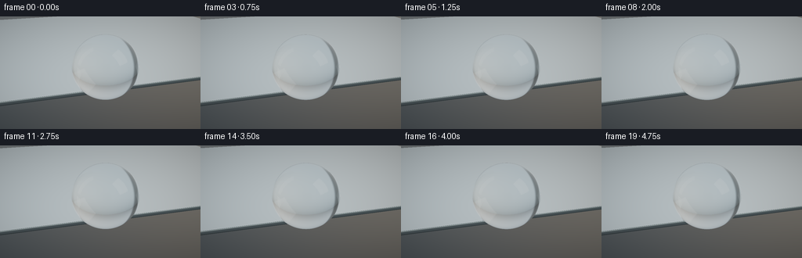
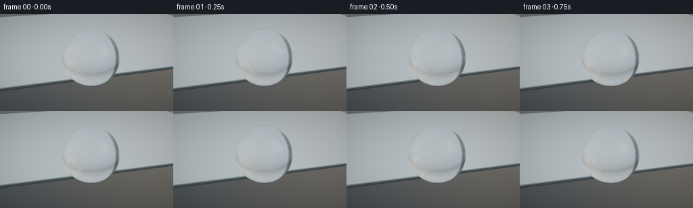
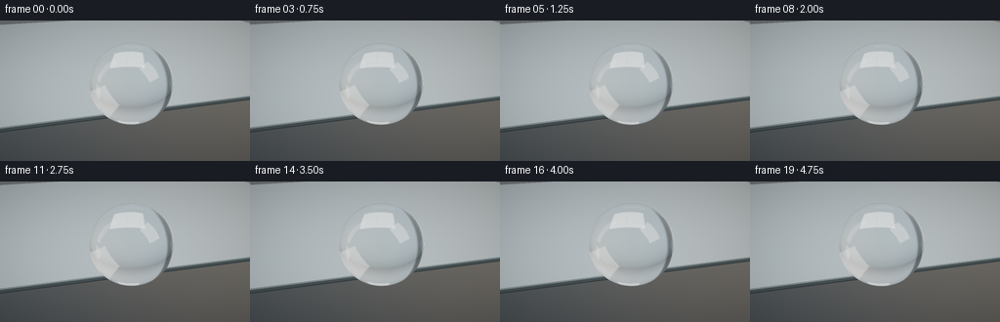
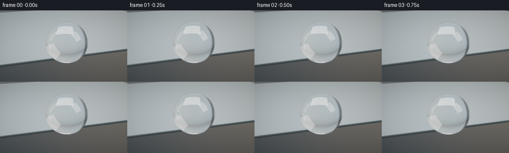
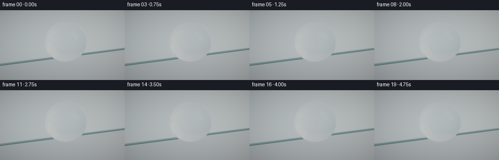
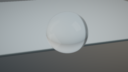

CODING AGENTS AS PIXEL WORLD MODELS
traex/GPT-6.1-Sol · mechanics_0054
点击播放 · 原生 RGB 像素
逐轮保存的候选
回放视频、检查图与代码变化。
每份候选均可单独播放。实际图片检查记录在下方工具轨迹中。
候选 01播放与检查图
点击播放 · 原生 RGB 像素


展开代码变化
--- 上一保存版本
+++ 本次保存版本
@@ -0,0 +1,171 @@
+"""Procedural macro water study. NumPy analytic ray optics; no rendering engine."""
+from pathlib import Path
+import json
+import numpy as np
+from PIL import Image
+import artifact_io
+
+ROOT=Path(__file__).resolve().parent
+SPEC=json.loads((ROOT/'task_spec.json').read_text())
+W,H=SPEC['width'],SPEC['height']
+SS=3
+
+def normalize(v):
+ return v / np.maximum(np.linalg.norm(v,axis=-1,keepdims=True),1e-9)
+
+def environment(d):
+ # A defocused photographic studio: pale blue-grey surroundings, cream bounce,
+ # two large softboxes and a darker off-camera flag.
+ x,y,z=d[:,0],d[:,1],d[:,2]
+ t=np.clip(y*.55+.5,0,1)
+ col=np.array([.28,.34,.38])[None,:]*(1-t[:,None])+np.array([.62,.69,.72])[None,:]*t[:,None]
+ warm=np.exp(-((x+.70)/.65)**2-((y-.12)/.58)**2-((z-.4)/.7)**2)
+ col+=warm[:,None]*np.array([.24,.20,.13])
+ # Large white rectangular window reflected in the bead.
+ # Directional coordinates allow actual curved reflection, rather than painted marks.
+ for vec,ww,hh,power in [((-.58,.63,-.52),.27,.44,1.65),((.7,.47,.4),.18,.52,.95)]:
+ axis=normalize(np.array(vec,dtype=np.float32))
+ right=normalize(np.cross(np.array([0.,1.,0.]),axis))
+ up=np.cross(axis,right)
+ denom=d@axis
+ u=(d@right)/np.maximum(denom,.001)
+ v=(d@up)/np.maximum(denom,.001)
+ dist=np.maximum(abs(u)/ww,abs(v)/hh)
+ weight=np.clip((1.08-dist)/.12,0,1)*(denom>0)
+ # Softbox ribs make the surface's curvature readable.
+ rib=1-.14*np.exp(-(u/.012)**2)-.09*np.exp(-((v+.09)/.014)**2)
+ col+=weight[:,None]*rib[:,None]*power*np.array([1.,.98,.94])
+ flag=np.exp(-((x-.25)/.26)**8-((y+.07)/.6)**8-((z+.95)/.35)**8)
+ col*=1-.77*flag[:,None]
+ # Smooth, deliberately out-of-focus environmental shapes.
+ col+=np.exp(-((x+.8)/.18)**2-((y+.2)/.25)**2)[:,None]*np.array([.07,.09,.09])
+ return col.astype(np.float32)
+
+CENTER=np.array([0.,.49,-.19],np.float32)
+RAD=np.array([.60,.58,.60],np.float32)
+
+def sphere_intersection(o,d):
+ q=(o-CENTER)/RAD
+ v=d/RAD
+ a=np.sum(v*v,axis=1)
+ b=np.sum(q*v,axis=1)
+ c=np.sum(q*q,axis=1)-1
+ delta=b*b-a*c
+ root=np.sqrt(np.maximum(delta,0))
+ t1=(-b-root)/a
+ t2=(-b+root)/a
+ t=np.where(t1>2e-4,t1,np.where(t2>2e-4,t2,1e6))
+ return np.where(delta>=0,t,1e6)
+
+def mirror_intersections(o,d):
+ # A real thin sheet: reflective face, glass cut edge, and dark silver backing.
+ denom=np.where(abs(d[:,1])>1e-8,d[:,1],1e-8)
+ tt=-o[:,1]/denom
+ p=o+d*tt[:,None]
+ good=(tt>1e-4)&(p[:,2]>=0)&(p[:,2]<8)&(abs(p[:,0])<6)
+ top=np.where(good,tt,1e6)
+ dz=np.where(abs(d[:,2])>1e-8,d[:,2],1e-8)
+ te=-o[:,2]/dz
+ pe=o+d*te[:,None]
+ edge=np.where((te>1e-4)&(pe[:,1]<0)&(pe[:,1]>-.075)&(abs(pe[:,0])<6),te,1e6)
+ tb=(-.075-o[:,1])/denom
+ pb=o+d*tb[:,None]
+ bottom=np.where((tb>1e-4)&(pb[:,2]>=0)&(pb[:,2]<8)&(abs(pb[:,0])<6),tb,1e6)
+ return top,edge,bottom
+
+def trace(o,d,depth=0):
+ n=len(d)
+ color=environment(d)
+ ts=sphere_intersection(o,d)
+ tm,te,tb=mirror_intersections(o,d)
+ t=np.minimum(np.minimum(ts,tm),np.minimum(te,tb))
+ hit=t<1e5
+ if not np.any(hit):return color
+ sm=hit&(ts==t)
+ mm=hit&(tm==t)
+ em=hit&(te==t)
+ bm=hit&(tb==t)
+ if np.any(mm):
+ p=o[mm]+d[mm]*t[mm,None]
+ rd=d[mm].copy();rd[:,1]*=-1
+ if depth<3:
+ reflected=trace(p+rd*.0005,rd,depth+1)
+ else:reflected=environment(rd)
+ # Polished silver mirror, not rough brushed metal.
+ color[mm]=reflected*np.array([.90,.945,.96])+np.array([.016,.023,.025])
+ if np.any(em):
+ p=o[em]+d[em]*t[em,None]
+ rd=d[em].copy();rd[:,2]*=-1
+ ev=environment(rd)
+ f=np.clip((p[:,1]+.075)/.075,0,1)
+ # Thin greenish-clear cut glass over a silver backing stripe.
+ ec=ev*np.array([.30,.48,.47])+.03
+ stripe=np.exp(-((f-.86)/.085)**2)
+ ec+=stripe[:,None]*np.array([.25,.32,.32])
+ ec*=1-.55*np.exp(-((f-.12)/.12)**2)[:,None]
+ color[em]=ec
+ if np.any(bm):color[bm]=np.array([.065,.080,.082])
+ if np.any(sm):
+ p=o[sm]+d[sm]*t[sm,None]
+ di=d[sm]
+ norm=normalize((p-CENTER)/(RAD*RAD))
+ cosi=np.clip(-np.sum(di*norm,axis=1),0,1)
+ rd=normalize(di+2*cosi[:,None]*norm)
+ if depth<3:reflection=trace(p+rd*.0007,rd,depth+1)
+ else:reflection=environment(rd)
+ eta=1/1.333
+ k=1-eta*eta*(1-cosi*cosi)
+ inside=normalize(eta*di+(eta*cosi-np.sqrt(np.maximum(k,0)))[:,None]*norm)
+ enter=p+inside*.0007
+ travel=sphere_intersection(enter,inside)
+ out=enter+inside*travel[:,None]
+ normal2=normalize((out-CENTER)/(RAD*RAD))
+ co=np.clip(np.sum(inside*normal2,axis=1),0,1)
+ k2=1-1.333**2*(1-co*co)
+ refr=normalize(1.333*inside+(-1.333*co+np.sqrt(np.maximum(k2,0)))[:,None]*normal2)
+ if depth<3:trans=trace(out+refr*.0008,refr,depth+1)
+ else:trans=environment(refr)
+ trans*=np.exp(-travel[:,None]*np.array([.015,.004,.002]))
+ fres=.02037+(1-.02037)*(1-cosi)**5
+ f2=.02037+(1-.02037)*(1-co)**5
+ # Tiny internal reflection preserves a natural luminous rim.
+ iri=normalize(inside-2*co[:,None]*normal2)
+ internal=environment(iri)
+ trans=trans*(1-f2[:,None])+internal*f2[:,None]
+ color[sm]=reflection*fres[:,None]+trans*(1-fres[:,None])
+ return color
+
+def render(frame):
+ global CENTER,RAD
+ t=frame/SPEC['fps']
+ # Surface tension keeps a ball; one very small damped capillary settling motion.
+ pulse=.023*np.exp(-t*.70)*np.sin(t*4.7)
+ RAD=np.array([.600*(1-pulse*.5),.580*(1+pulse),.600*(1-pulse*.5)],np.float32)
+ CENTER=np.array([.006*np.sin(t*1.35)*np.exp(-t*.7),.49+RAD[1]-.58,-.19],np.float32)
+ cam=np.array([2.25,2.50,-6.20],np.float32)
+ target=np.array([0.,.30,.08],np.float32)
+ fw=normalize(target-cam)
+ right=normalize(np.cross(fw,np.array([0.,1.,0.])))
+ up=np.cross(right,fw)
+ xx,yy=np.meshgrid((np.arange(W*SS)+.5)/(W*SS)*2-1,1-(np.arange(H*SS)+.5)/(H*SS)*2)
+ # Locked-off 100mm macro-style framing with almost imperceptible push-in.
+ fov=.265*(1-.018*t/5)
+ d=normalize(fw+xx.reshape(-1,1)*right*fov+yy.reshape(-1,1)*up*fov*H/W).astype(np.float32)
+ o=np.broadcast_to(cam,d.shape)
+ col=trace(o,d)
+ # Photographic filmic response with white highlight headroom.
+ col=np.maximum(col,0)
+ col=col/(.65+col)
+ col=np.clip(col,0,1)**(1/2.2)
+ col=col.reshape(H*SS,W*SS,3)
+ vignette=1-.095*(xx*xx+yy*yy)
+ col*=vignette[:,:,None]
+ im=Image.fromarray(np.uint8(np.clip(col*255+.5,0,255)))
+ return np.asarray(im.resize((W,H),Image.Resampling.LANCZOS))
+
+if __name__=='__main__':
+ frames=[]
+ for i in range(SPEC['frames']):
+ frames.append(render(i))
+ print('Rendered frame',i,flush=True)
+ artifact_io.save(np.stack(frames),ROOT)
候选 02播放与检查图
点击播放 · 原生 RGB 像素


展开代码变化
--- 上一保存版本
+++ 本次保存版本
@@ -17,13 +17,16 @@
# A defocused photographic studio: pale blue-grey surroundings, cream bounce,
# two large softboxes and a darker off-camera flag.
x,y,z=d[:,0],d[:,1],d[:,2]
- t=np.clip(y*.55+.5,0,1)
- col=np.array([.28,.34,.38])[None,:]*(1-t[:,None])+np.array([.62,.69,.72])[None,:]*t[:,None]
+ t=1/(1+np.exp(-9*(y-.03)))
+ col=np.array([.018,.034,.048])[None,:]*(1-t[:,None])+np.array([.57,.69,.76])[None,:]*t[:,None]
+ # Dark tall studio flag opposite a softly lit window.
+ panel=np.exp(-((x-.37)/.17)**6-((z-.85)/.38)**6)
+ col*=1-.82*panel[:,None]
warm=np.exp(-((x+.70)/.65)**2-((y-.12)/.58)**2-((z-.4)/.7)**2)
- col+=warm[:,None]*np.array([.24,.20,.13])
+ col+=warm[:,None]*np.array([.22,.14,.055])
# Large white rectangular window reflected in the bead.
# Directional coordinates allow actual curved reflection, rather than painted marks.
- for vec,ww,hh,power in [((-.58,.63,-.52),.27,.44,1.65),((.7,.47,.4),.18,.52,.95)]:
+ for vec,ww,hh,power in [((-.58,.63,-.52),.32,.39,3.4),((.7,.47,.4),.14,.52,1.7)]:
axis=normalize(np.array(vec,dtype=np.float32))
right=normalize(np.cross(np.array([0.,1.,0.]),axis))
up=np.cross(axis,right)
候选 03播放与检查图
点击播放 · 原生 RGB 像素


展开代码变化
--- 上一保存版本
+++ 本次保存版本
@@ -26,7 +26,7 @@
col+=warm[:,None]*np.array([.22,.14,.055])
# Large white rectangular window reflected in the bead.
# Directional coordinates allow actual curved reflection, rather than painted marks.
- for vec,ww,hh,power in [((-.58,.63,-.52),.32,.39,3.4),((.7,.47,.4),.14,.52,1.7)]:
+ for vec,ww,hh,power in [((-.58,.63,-.52),.32,.39,18.0),((.7,.47,.4),.14,.52,7.5),((-.36,.64,.8),.20,.14,.85)]:
axis=normalize(np.array(vec,dtype=np.float32))
right=normalize(np.cross(np.array([0.,1.,0.]),axis))
up=np.cross(axis,right)
可观测工具轨迹
实际执行的命令与返回图片。
命令 1exit 0
/bin/bash -lc 'ls -la && cat prompt.txt && cat GENERATION_RULES.md && cat task_spec.json'
命令 2exit 0
/bin/bash -lc "cat artifact_io.py && python - <<'PY'
import numpy, PIL
print('numpy and PIL available')
PY"命令 3exit 0
/bin/bash -lc "cat > generate.py <<'PY'
\"\"\"Procedural macro water study. NumPy analytic ray optics; no rendering engine.\"\"\"
from pathlib import Path
import json
import numpy as np
from PIL import Image
import artifact_io
ROOT=Path(__file__).resolve().parent
SPEC=json.loads((ROOT/'task_spec.json').read_text())
W,H=SPEC['width'],SPEC['height']
SS=3
def normalize(v):
return v / np.maximum(np.linalg.norm(v,axis=-1,keepdims=True),1e-9)
def environment(d):
# A defocused photographic studio: pale blue-grey surroundings, cream bounce,
# two large softboxes and a darker off-camera flag.
x,y,z=d[:,0],d[:,1],d[:,2]
t=np.clip(y*.55+.5,0,1)
col=np.array([.28,.34,.38])[None,:]*(1-t[:,None])+np.array([.62,.69,.72])[None,:]*t[:,None]
warm=np.exp(-((x+.70)/.65)**2-((y-.12)/.58)**2-((z-.4)/.7)**2)
col+=warm[:,None]*np.array([.24,.20,.13])
# Large white rectangular window reflected in the bead.
# Directional coordinates allow actual curved reflection, rather than painted marks.
for vec,ww,hh,power in [((-.58,.63,-.52),.27,.44,1.65),((.7,.47,.4),.18,.52,.95)]:
axis=normalize(np.array(vec,dtype=np.float32))
right=normalize(np.cross(np.array([0.,1.,0.]),axis))
up=np.cross(axis,right)
denom=d@axis
u=(d@right)/np.maximum(denom,.001)
v=(d@up)/np.maximum(denom,.001)
dist=np.maximum(abs(u)/ww,abs(v)/hh)
weight=np.clip((1.08-dist)/.12,0,1)*(denom>0)
# Softbox ribs make the surface's curvature readable.
rib=1-.14*np.exp(-(u/.012)**2)-.09*np.exp(-((v+.09)/.014)**2)
col+=weight[:,None]*rib[:,None]*power*np.array([1.,.98,.94])
flag=np.exp(-((x-.25)/.26)**8-((y+.07)/.6)**8-((z+.95)/.35)**8)
col*=1-.77*flag[:,None]
# Smooth, deliberately out-of-focus environmental shapes.
col+=np.exp(-((x+.8)/.18)**2-((y+.2)/.25)**2)[:,None]*np.array([.07,.09,.09])
return col.astype(np.float32)
CENTER=np.array([0.,.49,-.19],np.float32)
RAD=np.array([.60,.58,.60],np.float32)
def sphere_intersection(o,d):
q=(o-CENTER)/RAD
v=d/RAD
a=np.sum(v*v,axis=1)
b=np.sum(q*v,axis=1)
c=np.sum(q*q,axis=1)-1
delta=b*b-a*c
root=np.sqrt(np.maximum(delta,0))
t1=(-b-root)/a
t2=(-b+root)/a
t=np.where(t1>2e-4,t1,np.where(t2>2e-4,t2,1e6))
return np.where(delta>=0,t,1e6)
def mirror_intersections(o,d):
# A real thin sheet: reflective face, glass cut edge, and dark silver backing.
denom=np.where(abs(d[:,1])>1e-8,d[:,1],1e-8)
tt=-o[:,1]/denom
p=o+d*tt[:,None]
good=(tt>1e-4)&(p[:,2]>=0)&(p[:,2]<8)&(abs(p[:,0])<6)
top=np.where(good,tt,1e6)
dz=np.where(abs(d[:,2])>1e-8,d[:,2],1e-8)
te=-o[:,2]/dz
pe=o+d*te[:,None]
edge=np.where((te>1e-4)&(pe[:,1]<0)&(pe[:,1]>-.075)&(abs(pe[:,0])<6),te,1e6)
tb=(-.075-o[:,1])/denom
pb=o+d*tb[:,None]
bottom=np.where((tb>1e-4)&(pb[:,2]>=0)&(pb[:,2]<8)&(abs(pb[:,0])<6),tb,1e6)
return top,edge,bottom
def trace(o,d,depth=0):
n=len(d)
color=environment(d)
ts=sphere_intersection(o,d)
tm,te,tb=mirror_intersections(o,d)
t=np.minimum(np.minimum(ts,tm),np.minimum(te,tb))
hit=t<1e5
if not np.any(hit):return color
sm=hit&(ts==t)
mm=hit&(tm==t)
em=hit&(te==t)
bm=hit&(tb==t)
if np.any(mm):
p=o[mm]+d[mm]*t[mm,None]
rd=d[mm].copy();rd[:,1]*=-1
if depth<3:
reflected=trace(p+rd*.0005,rd,depth+1)
else:reflected=environment(rd)
# Polished silver mirror, not rough brushed metal.
color[mm]=reflected*np.array([.90,.945,.96])+np.array([.016,.023,.025])
if np.any(em):
p=o[em]+d[em]*t[em,None]
rd=d[em].copy();rd[:,2]*=-1
ev=environment(rd)
f=np.clip((p[:,1]+.075)/.075,0,1)
# Thin greenish-clear cut glass over a silver backing stripe.
ec=ev*np.array([.30,.48,.47])+.03
stripe=np.exp(-((f-.86)/.085)**2)
ec+=stripe[:,None]*np.array([.25,.32,.32])
ec*=1-.55*np.exp(-((f-.12)/.12)**2)[:,None]
color[em]=ec
if np.any(bm):color[bm]=np.array([.065,.080,.082])
if np.any(sm):
p=o[sm]+d[sm]*t[sm,None]
di=d[sm]
norm=normalize((p-CENTER)/(RAD*RAD))
cosi=np.clip(-np.sum(di*norm,axis=1),0,1)
rd=normalize(di+2*cosi[:,None]*norm)
if depth<3:reflection=trace(p+rd*.0007,rd,depth+1)
else:reflection=environment(rd)
eta=1/1.333
k=1-eta*eta*(1-cosi*cosi)
inside=normalize(eta*di+(eta*cosi-np.sqrt(np.maximum(k,0)))[:,None]*norm)
enter=p+inside*.0007
travel=sphere_intersection(enter,inside)
out=enter+inside*travel[:,None]
normal2=normalize((out-CENTER)/(RAD*RAD))
co=np.clip(np.sum(inside*normal2,axis=1),0,1)
k2=1-1.333**2*(1-co*co)
refr=normalize(1.333*inside+(-1.333*co+np.sqrt(np.maximum(k2,0)))[:,None]*normal2)
if depth<3:trans=trace(out+refr*.0008,refr,depth+1)
else:trans=environment(refr)
trans*=np.exp(-travel[:,None]*np.array([.015,.004,.002]))
fres=.02037+(1-.02037)*(1-cosi)**5
f2=.02037+(1-.02037)*(1-co)**5
# Tiny internal reflection preserves a natural luminous rim.
iri=normalize(inside-2*co[:,None]*normal2)
internal=environment(iri)
trans=trans*(1-f2[:,None])+internal*f2[:,None]
color[sm]=reflection*fres[:,None]+trans*(1-fres[:,None])
return color
def render(frame):
global CENTER,RAD
t=frame/SPEC['fps']
# Surface tension keeps a ball; one very small damped capillary settling motion.
pulse=.023*np.exp(-t*.70)*np.sin(t*4.7)
RAD=np.array([.600*(1-pulse*.5),.580*(1+pulse),.600*(1-pulse*.5)],np.float32)
CENTER=np.array([.006*np.sin(t*1.35)*np.exp(-t*.7),.49+RAD[1]-.58,-.19],np.float32)
cam=np.array([2.25,2.50,-6.20],np.float32)
target=np.array([0.,.30,.08],np.float32)
fw=normalize(target-cam)
right=normalize(np.cross(fw,np.array([0.,1.,0.])))
up=np.cross(right,fw)
xx,yy=np.meshgrid((np.arange(W*SS)+.5)/(W*SS)*2-1,1-(np.arange(H*SS)+.5)/(H*SS)*2)
# Locked-off 100mm macro-style framing with almost imperceptible push-in.
fov=.265*(1-.018*t/5)
d=normalize(fw+xx.reshape(-1,1)*right*fov+yy.reshape(-1,1)*up*fov*H/W).astype(np.float32)
o=np.broadcast_to(cam,d.shape)
col=trace(o,d)
# Photographic filmic response with white highlight headroom.
col=np.maximum(col,0)
col=col/(.65+col)
col=np.clip(col,0,1)**(1/2.2)
col=col.reshape(H*SS,W*SS,3)
vignette=1-.095*(xx*xx+yy*yy)
col*=vignette[:,:,None]
im=Image.fromarray(np.uint8(np.clip(col*255+.5,0,255)))
return np.asarray(im.resize((W,H),Image.Resampling.LANCZOS))
if __name__=='__main__':
frames=[]
for i in range(SPEC['frames']):
frames.append(render(i))
print('Rendered frame',i,flush=True)
artifact_io.save(np.stack(frames),ROOT)
PY
OPENBLAS_NUM_THREADS=1 python generate.py"命令 4exit 0
/bin/bash -lc "python - <<'PY' p='generate.py' s=open(p).read() s=s.replace(\"t=np.clip(y*.55+.5,0,1)\\n col=np.array([.28,.34,.38])[None,:]*(1-t[:,None])+np.array([.62,.69,.72])[None,:]*t[:,None]\", \"t=1/(1+np.exp(-9*(y-.03)))\\n col=np.array([.018,.034,.048])[None,:]*(1-t[:,None])+np.array([.57,.69,.76])[None,:]*t[:,None]\\n # Dark tall studio flag opposite a softly lit window.\\n panel=np.exp(-((x-.37)/.17)**6-((z-.85)/.38)**6)\\n col*=1-.82*panel[:,None]\") s=s.replace(\"col+=warm[:,None]*np.array([.24,.20,.13])\", \"col+=warm[:,None]*np.array([.22,.14,.055])\") s=s.replace(\"((-.58,.63,-.52),.27,.44,1.65)\", \"((-.58,.63,-.52),.32,.39,3.4)\") s=s.replace(\"((.7,.47,.4),.18,.52,.95)\", \"((.7,.47,.4),.14,.52,1.7)\") open(p,'w').write(s) PY OPENBLAS_NUM_THREADS=1 python generate.py"
命令 5exit 0
/bin/bash -lc "python - <<'PY' p='generate.py' s=open(p).read().replace(\"((-.58,.63,-.52),.32,.39,3.4)\", \"((-.58,.63,-.52),.32,.39,18.0)\").replace(\"((.7,.47,.4),.14,.52,1.7)\", \"((.7,.47,.4),.14,.52,7.5),((-.36,.64,.8),.20,.14,.85)\") open(p,'w').write(s) PY OPENBLAS_NUM_THREADS=1 python generate.py"
命令 6exit 0
/bin/bash -lc "python - <<'PY'
import numpy as np
from pathlib import Path
p=np.load('pixels.npz')['pixels']
assert p.shape==(144,256,20)
assert len(list(Path('frames').glob('*.png')))==20
assert Path('index.html').is_file()
print('Verified: 20 RGB frames, 256Ã144, 4 fps; required artifacts exist.')
PY"视觉工具实际返回图片 1

视觉工具实际返回图片 2

视觉工具实际返回图片 3

保存候选 3 份；完成命令 6 次；可验证图片返回 3 张。原始 API 响应与完整日志保留在本地。